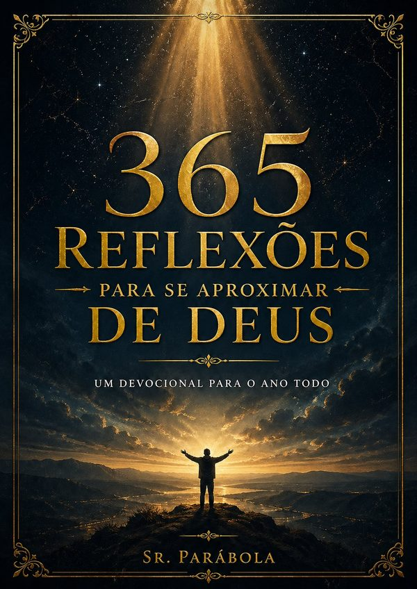

365 reflexões diárias baseadas nas Escrituras Sagradas — cada uma com um versículo, uma reflexão profunda e uma frase para carregar no coração. Simples de ler. Impossível de esquecer.

Se alguma dessas frases ressoa com você, este livro foi escrito para a sua vida.
Um devocional completo, organizado para guiar sua jornada espiritual por um ano inteiro.
Um trecho da Bíblia para cada dia do ano, na versão Almeida Revista e Corrigida — uma das traduções mais respeitadas da história.
Cada versículo vem com uma explicação clara, com comparações do dia a dia, para que a Palavra não fique no papel — mas entre na sua semana.
Ao final de cada reflexão, uma frase curta e direta para você levar no coração durante o dia — palavras que renovam a fé e iluminam os passos.
365 dias estruturados para criar o hábito da devoção diária. Apenas 5 a 10 minutos por dia que mudam completamente sua espiritualidade.
Não é necessário ser cristão de longa data para aproveitar. É necessário apenas ter um coração disposto a ouvir — como diz o próprio autor.
Formato PDF compatível com celular, tablet e computador. Leia ao acordar, no transporte ou antes de dormir, onde e quando for melhor pra você.
Conteúdo real extraído diretamente do livro. Clique nas abas para explorar:
"O Senhor é o meu pastor e nada me faltará."
Imagine que você está num caminho desconhecido, sem mapa, sem saber ao certo onde vai chegar. Agora imagine que alguém que conhece cada pedra desse caminho está do seu lado, guiando cada passo. É exatamente isso que Deus promete quando Davi diz "o Senhor é o meu pastor".
Um pastor não abandona o rebanho quando escurece. Ele não vai embora quando chove ou quando o terreno fica difícil. Ele fica. E não só fica — ele guia, protege e busca a ovelha que se perdeu.
Quando Davi diz "nada me faltará", ele não está dizendo que nunca vai passar por dificuldade. Ele está dizendo que, mesmo nas dificuldades, não vai lhe faltar o essencial: presença, direção e cuidado.
Pense numa época da sua vida em que tudo parecia incerto. Se você olhar para trás hoje, vai perceber que algo sempre apareceu. Uma porta que abriu. Uma pessoa que chegou na hora certa. Um ânimo que voltou quando você já não esperava. Isso é o pastor agindo.
"Para sempre está o Senhor diante de mim; estando ele à minha mão direita, não serei abalado."
Davi diz que colocou o Senhor "para sempre" diante de si. Isso não é uma experiência passiva — é uma escolha ativa e diária de manter a consciência da presença de Deus. É acordar e reconhecer: Ele está aqui. É entrar numa reunião difícil e lembrar: Ele está aqui. É deitar exausto e saber: Ele está aqui.
A "mão direita" na cultura bíblica era o lugar de honra, de apoio, de proteção. Ter alguém à sua mão direita significava ter um aliado ao seu lado mais vulnerável, pronto para agir em sua defesa.
"Não serei abalado" — não significa que nada vai te sacudir. Significa que, mesmo sendo sacudido, você não vai cair. Existe uma diferença entre ser movido e ser derrubado. O vento move as árvores, mas as árvores com raiz profunda não caem.
Cultivar a consciência da presença de Deus não requer rituais elaborados. Às vezes é um pensamento dirigido a Ele no meio do trânsito. Às vezes é um momento de silêncio antes de uma decisão. Às vezes é simplesmente lembrar: Ele está aqui.
"Bendirei ao Senhor em todo o tempo; o seu louvor estará sempre nos meus lábios."
"Em todo o tempo." Não só quando está bem. Não só no culto de domingo. Não só quando a oração foi respondida como você esperava. Em todo o tempo — inclusive no tempo difícil, no tempo de espera, no tempo de dúvida, no tempo que você menos sente vontade de louvar.
Davi escreveu esse salmo num momento de perigo extremo — ele havia fingido ser louco para escapar de um rei inimigo. Não era um dia de vitória e celebração. Era um dia de sobrevivência e desespero. E foi exatamente nesse dia que ele escolheu bendizer ao Senhor.
O louvor em tempos difíceis não é hipocrisia — é fé. É a declaração de que a realidade de Deus não depende das suas circunstâncias do momento. Que Ele é bom mesmo quando o dia está ruim.
Louvar em todo o tempo não significa fingir alegria que não existe. Significa escolher reconhecer quem Deus é — independente do que você está sentindo sobre a situação. Esse é o louvor que mais custa e mais vale.
"A tua fidelidade vai de geração em geração."
O salmista olhou para a história e viu um padrão: a fidelidade de Deus não é um fenômeno de uma geração. Ela atravessa. O mesmo Deus que foi fiel para Abraão, foi fiel para Isaque, foi fiel para Jacó. O mesmo que sustentou no Egito, sustentou no deserto, sustentou na Terra Prometida. Geração após geração, a fidelidade permaneceu.
Isso é evidência acumulada — não fé cega. Cada geração que testemunhou a fidelidade de Deus e a transmitiu para a próxima está construindo um registro. E esse registro é convincente: Ele não falhou ainda. E o que não falhou por gerações não vai falhar agora.
Pense nos que vieram antes de você na fé. Os pais, os avós, as pessoas que te contaram como Deus foi fiel nas suas vidas. Cada uma dessas histórias é um tijolo no testemunho da fidelidade que atravessa gerações.
E você também está construindo para quem vem depois. O que você vai transmitir? Que testemunho da fidelidade de Deus você está criando pela forma como vive?
Benefícios reais para a sua vida espiritual, mental e emocional — confirmados pelos próprios leitores.
Cada reflexão é um porto seguro para quando o mundo apertar. Palavras que acalmam o coração e colocam os problemas na perspectiva certa.
5 a 10 minutos por dia. Sem esforço, sem complicação. Uma reflexão por dia no ritmo que a vida permite — como o próprio autor descreve na introdução.
Deixe de ler a Bíblia sem entender. Cada passagem é explicada com comparações do dia a dia para que a Palavra entre na sua semana, não fique só no papel.
A "Frase do Dia" é sua munição espiritual. Curta, direta, feita para você repetir enquanto trabalha, dirige ou cuida da família.
365 encontros diários com a Palavra. Você não vai apenas ler sobre Deus — você vai O conhecer de forma cada vez mais profunda e pessoal.
🔥 Atenção: apenas 87% das cópias desta oferta especial já foram adquiridas
Restam poucas cópias neste preço — quando acabar, o valor volta ao normal
Mais de 4.700 pessoas já vivenciaram esta transformação. Alguns relatos:
"Comecei a ler em janeiro sem muita expectativa. Em março, minha filha me perguntou o que havia mudado em mim. Eu simplesmente disse: 'Estou mais perto de Deus'. A linguagem simples e as comparações do dia a dia fazem toda a diferença. Vale cada centavo."
"Estava passando por uma fase muito difícil no trabalho e no casamento. Cada reflexão parecia escrita para o que eu estava vivendo. A frase do dia da reflexão 100 — 'louvar quando está difícil não é fingimento' — mudou minha perspectiva completamente."
"Nunca fui boa em leituras longas, mas esse e-book é perfeito! 5 minutinhos pela manhã e já muda completamente o meu dia. A frase do dia fico repetindo enquanto trabalho. Indicaria pra qualquer pessoa, religiosa ou não."
"Comprei para mim e logo depois comprei para minha mãe e minha irmã. É o tipo de presente que transforma de verdade. A reflexão sobre perdão ilimitado me ajudou a resolver uma mágoa antiga que eu carregava há anos."
"Sou pastor e indiquei esse e-book para toda a minha congregação. Em dois meses, os membros relataram mais paz, mais fé e maior participação nos cultos. A abordagem sem religiosidade excessiva alcança até quem estava afastado."
"Minha ansiedade diminuiu muito desde que comecei. A reflexão sobre a paz que excede o entendimento me tocou profundamente. Não é milagre — é a paz que vem quando você conecta a mente com a Palavra de Deus todo dia."
Quando o contador chegar a zero, o preço volta ao valor normal de R$ 29,90
Se por qualquer motivo você não se sentir completamente satisfeito dentro de 7 dias após a compra, basta nos enviar um e-mail e devolveremos 100% do seu investimento. Sem perguntas, sem burocracia, sem complicação. Essa é a nossa promessa.
Investimento único. Acesso vitalício. Transformação para a vida toda.
De R$ 59,90
pagamento único • acesso vitalício
📌 Menos de R$ 0,03 por dia de transformação espiritual
🔴 Oferta encerra em:
🔒 Pagamento seguro via PIX, cartão ou boleto • Acesso imediato ao PDF
Você merece começar cada dia com a Palavra de Deus no coração. Não deixe para amanhã o que pode transformar a sua vida hoje.
✝ COMEÇAR MINHA JORNADA AGORA